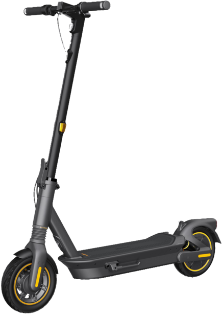

En ville, sur les pavés ou les chemins de gravier de campagne, la trottinette MAX G2 E de Ninebot sera votre compagnon idéal ! Avec son autonomie allant jusqu'à 70 km grâce à la nouvelle technologie RideyLONG, sa puissante propulsion arrière, associée à un système de double suspension, et le système de contrôle de la traction pour maintenir la stabilité sur les routes glissantes, la MAX G2 E vous permet de passer au niveau supérieur ! pour plus d'informations concernant la réglementation. cliquer
